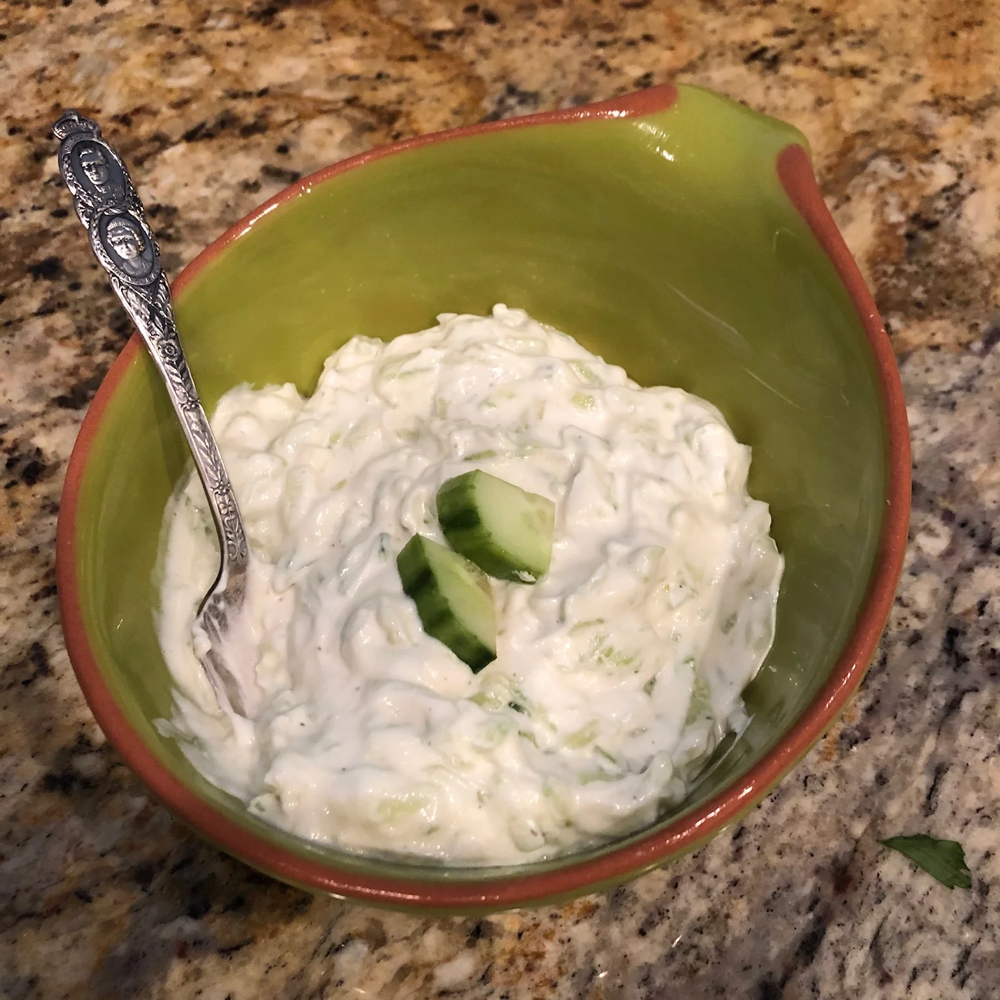

Authentic Greek Tzatziki

Description
A lovely, cool and refreshing classical Greek salad-sauce-yogurt, that can be combined with hot toasted pita bread , veggies, lamb kebabs and musch more!
Kali orexi! (Bon appetit!)
Ingredients
- 4 tablespoons of olive oil
- 2 tablespoons of red wine vinegar
- 1 clove of garlic, minced, or more to taste
- 1 large cucumber
- salt to taste
- 1 (17.6 ounce) container full fat plain Greek yogurt (such as FAGE Total®)
Ingredients
- Stir together olive oil, vinegar, and garlic in a bowl and let sit while you prepare the cucumber.
- Peel cucumber and cut in half lengthways; scrape out all the seeds. Grate cucumber with a cheese grater into a sieve set over a bowl. Sprinkle with salt. Strain out as much liquid as possible by pressing down in the sieve with the palm of your
hand. Alternately you can wring cucumber out in a clean tea towel. Add cucumber and yogurt to the garlic mixture. Mix until well combined and season with salt to taste.